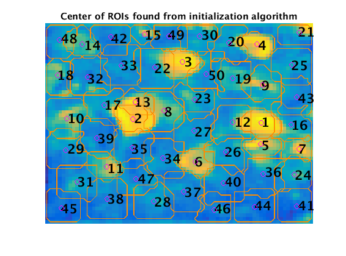
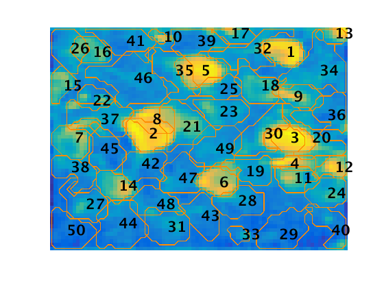

Simultaneous Denoising, Deconvolution and Demixing of Calcium Imaging Data
This algorithm does some stuff...
Contents
Calcium Data
Basic background on calcium data. Maybe have another tutorial with their model assumptions. Show gif of raw data here?
filename = 'demoMovie.tif';
im = readTifStack(filename);
z_project(im);
Warning: TIFF library warning - 'TIFFReadDirectory: Unknown field with tag 50838 (0xc696) encountered.' Warning: TIFF library warning - 'TIFFReadDirectory: Unknown field with tag 50839 (0xc697) encountered.'
Parameters
Inherent
[d1,d2,T] = size(im); % dimensions of dataset d = d1*d2; % total number of pixels
User defined
max_cells = 50; % number of components to be found p = 2; % order of autoregressive system (p = 0 no dynamics, p=1 just decay, p = 2, both rise and decay) options = CNMFSetParms(... 'd1',d1,'d2',d2,... % dimensions of datasets 'search_method','dilate','dist',8,... % search locations when updating spatial components 'deconv_method','constrained_foopsi',... % activity deconvolution method 'temporal_iter',2,... % number of block-coordinate descent steps 'fudge_factor',.98,... % bias correction for AR coefficients 'merge_thr',.85,... % merging threshold 'gSig',4,... % std of gaussian kernel (size of neuron) 'maxthr',.05... % threshold of max value below which values are discarded (default: 0.1) );
Preprocessing
Preprocessing includes fixing missing pixels, estimating model parameters. Explain autoregressive model (again with little detail and if there is time write up something more detailed) Sections: Autoregressive Model for Calcium Dynamics Estimation of Model Parameters
[P,im] = preprocess_data(im,p); z_project(im);
Estimating the noise power for each pixel from a simple PSD estimate... done
These are the standard deviation projections - they don't look that different, but maybe we can find some way to show the differences. I want to see if we can get .gif files in here.
Initialize spatial components
Sections:
- Greedy Initialization for Somatic Imaging Data
- Group Lasso Initialization for Somatic Imaging Data
HALS
Manually refine spatial components
Update spatial components
Sections:
- Spatiotemporal Deconvolution and Component Demixing
- Estimating A, b
- Ranking and removing components
Update temporal components
Sections:
- Spatiotemporal Deconvolution and Component Demixing
- Estimating C, d
- Ranking and removing components
Merge components
This is basically the demo script, but we can add in more explanation and some demonstrative plots. It would also be cool to give some general demonstrations of the methods maybe. Something where we show what the deconvolution does on a single trace so that it's easy to understand... I dunno. Obviously we won't have time to show details on a lot of stuff, but if there is something that we really like, we could give more about it in separate (linked) tutorial pages.